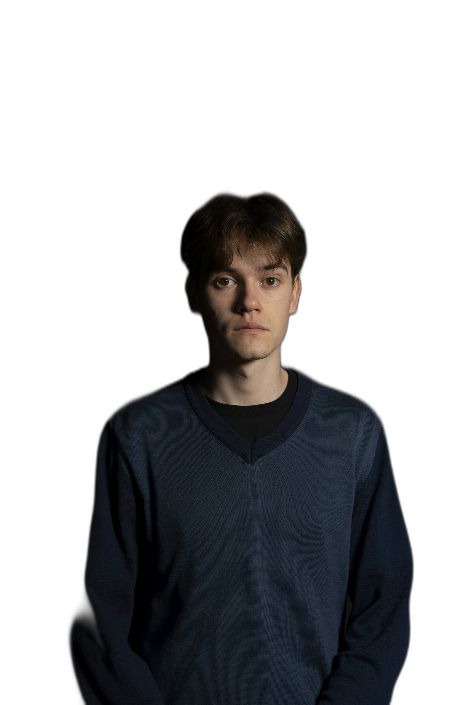

Versione 2 del test — su tua indicazione: ritaglio vero del soggetto (non più un rettangolo sfumato), testo molto più grande, bagliore azzurro dietro al soggetto, grading colore cinematografico sulla foto, vignetta sulla scena. Non è collegata al resto del sito, non tocca demo-redesign.html.
Il ritaglio è stato fatto con uno strumento di segmentazione automatica (rembg, rete neurale open source) sulla foto placeholder — stesso procedimento che useremo sulla tua foto vera quando sarà pronta. I bordi (capelli, spalle) sono puliti ma non perfetti al 100%: su una foto scattata apposta con sfondo pulito il risultato sarà ancora più netto.
Prossimo passo se la direzione ti convince: una tua foto con le stesse caratteristiche (sfondo scuro/pulito, sguardo in camera, buona luce) per rifare il ritaglio con la foto vera.